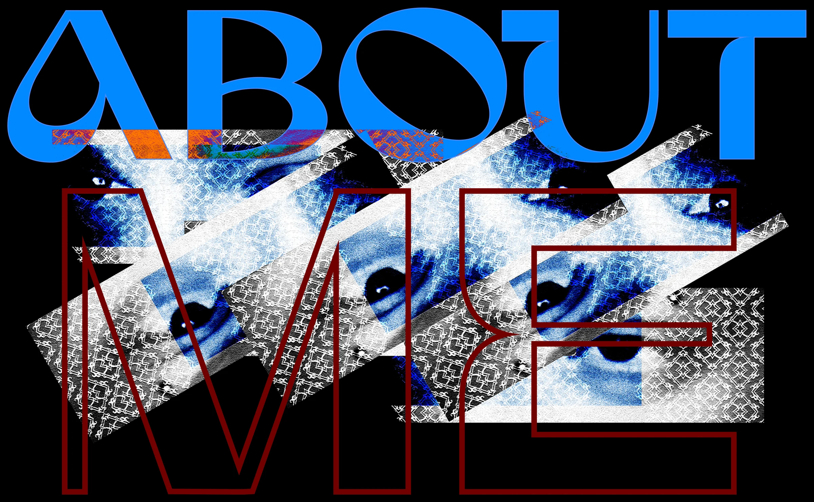
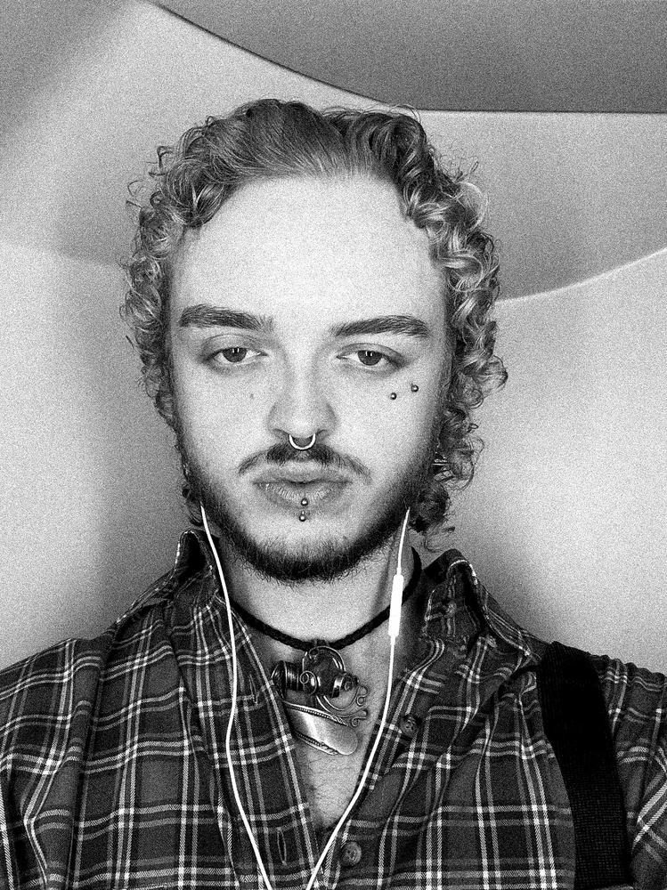

A designer shaped by fashion, art and a love for detail.
I'm Harald, a graphic design student in Ghent with a habit of turning ideas into something visual. Whether that's a brand, a layout, or a website.
Fashion, illustration and design have shaped how I see things since I was a kid, and that still drives everything I make.
Education
Graduaat Grafische Vormgeving — Arteveldehogeschool Gent (2025 — present)
Branding, UI/UX, publication design, motion and photography.
Kunsthumaniora Brugge (2022 — 2025)
Design, expo, drawing, graphic design, painting and fashion.

Sales Assistant — New Yorker (Kortrijk & Brugge, age 16–18)
Two years of retail work taught me how to read people fast, stay calm under pressure, and actually listen to what someone needs: skills that turned out to be just as useful in design as they were behind a till.
Fashion Intern — Cadastre Ewquis Couture (Brugge)
A hands-on internship with a designer specialized in historical costumes and corsetry. It was my first real look at how fashion gets made from the inside: precision, craftsmanship, and a lot of patience. It's part of why I still see fashion and design as connected, not separate worlds.
I've always had more ideas than time to make them. Design became the way to actually finish what's in my head, whether it's a brand that needs a voice, a layout that needs to breathe, or a piece of personal art that doesn't need to explain itself. I care about the details most people miss, and I'd rather spend an extra hour getting something right than ship it half-finished.
I'm currently looking for an internship where I can keep growing, especially somewhere that values both structure and style. If that sounds like your team, let's talk.